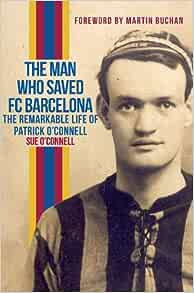
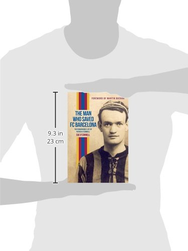
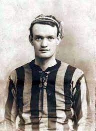

Made by Duy Bui - s3978546
Email: s3978546@rmit.edu.vn



Price: 14.55 $
Patrick O’Connell is not a name usually associated with the likes of Lionel Messi, Pep Guardiola or Johan Cruyff, yet this is the man who saved FC Barcelona from financial ruin. Born in Dublin in 1887, Patrick O’Connell had a successful playing career with Belfast Celtic, Hull City, Sheffield Wednesday and Manchester United, where he was involved in one of the most notorious match-fixing football scandals of his generation. On his retirement from playing, O’Connell became a successful manager with Ashington but then left his family in 1922 to work in Spain, first as manager of Racing de Santander, then Real Oviedo, Real Betis de Sevilla and finally FC Barcelona. In 1935 ‘Don Patricio’, as he was affectionately known, managed Betis to their only La Liga title success, as well as bigamously marrying his second wife. At the outbreak of the Spanish Civil War in 1936, the President of Barcelona, Josep Sunyol, was assassinated, leaving the club in crisis. O’Connell took the team on a tour of Mexico, Cuba and New York and the money they raised ensured the club’s survival. After the Civil War, he returned to work in Spain before heading to London where, unable to find work, he died destitute in 1959. This biography was written over many years by Sue O’Connell, wife of Patrick’s grandson, Mike. The author’s access to authentic documents, letters and family memories, along with her extensive research in England, Ireland, Spain and Mexico, has allowed her to reconstruct the life of this remarkable man.
Made by Duy Bui - s3978546
Email: s3978546@rmit.edu.vn